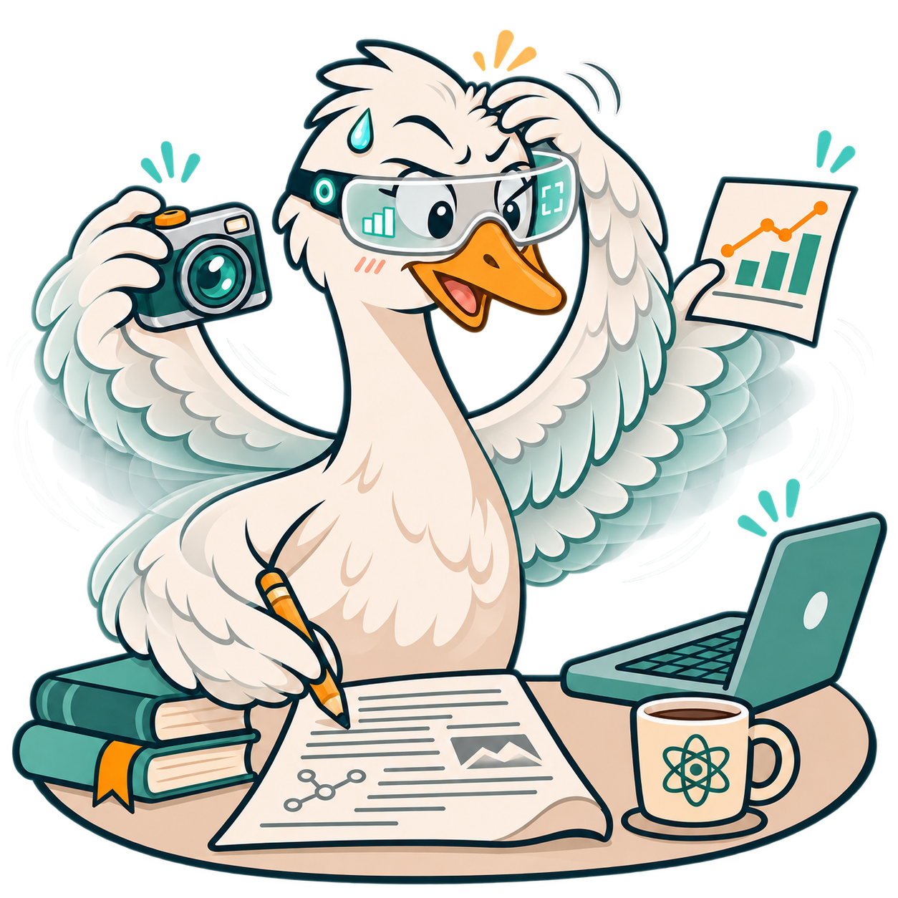

使用中 · 经验网页
知识技能学习
用 Notion 组织课堂、知识和技能学习。这里记录现成方案、虚构三关示意与搭建检查清单，把学习任务拆成能尝试、能回看的小关卡。
查看学习闯关 →
沿用本仓库已有页面；搭建能力与效果仍需实际验证。
其他人是怎么做的
先回忆，再间隔复习。把同一内容分散到不同时间复习，通过不看资料的主动回忆发现遗漏，再补充反馈。
适用范围：教学综述支持这些学习策略，不提供统一的最佳复习天数，也不证明某个产品有效。
A SMALL COLLECTION OF WORKING EXAMPLES
这里记录我在学习、研究和日常生活中实际用过的工具与方法，也记录正在尝试的方法与暂时停下的原型。涉及内容核查的示例会保留原文和判断依据，方便查看哪些地方还需要自己核对。

IN MY ACTUAL WORK & LIFE
这些是我实际在用的工具或工作方式。审稿拆解用虚构案例说明方法，不展示真实论文或未发表结果。
使用中 · 经验网页
用 Notion 组织课堂、知识和技能学习。这里记录现成方案、虚构三关示意与搭建检查清单，把学习任务拆成能尝试、能回看的小关卡。
沿用本仓库已有页面；搭建能力与效果仍需实际验证。
先回忆，再间隔复习。把同一内容分散到不同时间复习，通过不看资料的主动回忆发现遗漏，再补充反馈。
适用范围：教学综述支持这些学习策略，不提供统一的最佳复习天数，也不证明某个产品有效。
使用中 · 工作方式示例
我实际在用的是拆解修稿与集中核查的工作方式。把观点概括、原文、截图、图和图注放在同一份 Google 文档里，减少来回查找；这里用全虚构 UFO 案例演示。
两种模式并列：前者系统理解全文，后者只审当前反馈。都使用独立虚构外星人材料，阅读状态互不覆盖。
静态示例不生成 Google 文档，不运行分析；虚构案例不是真实研究。
逐点回应，并让修改可定位。区分审稿原话、作者答复与稿件修改，说明新旧版本差异和修改位置。
适用范围：这是回复组织的实践建议，不保证录用，具体要求仍以期刊为准。
Noble：Ten simple rules for writing a response to reviewers ↗
使用中 · 日常自助
有时要应对焦虑、压力或低能量，也是生活中可能遇到的一部分。慢慢倒用于日常记录、状态觉察与下一小步的选择，给暂时做不动的时候留一点余地。
WHO 的 grounding 练习先觉察当下想法与感受，再把注意力带回身体和周围能看到、听到、触到的事物。
适用范围：面向公众的压力管理自助练习，不是诊断或治疗，也不是要求压下情绪。
作者个人经验与观点，非赞助。鼠标悬停可展开，也可点击标题或用键盘 Enter / 空格切换；展开后可按 Esc 收起。
我会看英英释义。遇到不熟的同义词，再点进它对应的词条继续看，沿着词与词的联系理解。
我的每日目标是过一遍。长期多次接触，边看边想，让词语在不同语境里再出现，而不是要求自己一次记住。
我每天用扇贝阅读，坚持阅读，也尝试在阅读时直接用英文思考。这是个人使用习惯，不是赞助推荐。
我认为发音可以从基础慢慢练起。可以用扇贝口语或类似口语工具辅助练习，选适合自己的方式，不把某一个工具当作唯一途径。
让词汇在听读和使用中再次出现。主动提取新词，在阅读与听力里留意它们，再用贴近生活的例句记录和练习。
适用范围：British Council 的教学建议，不是某种打卡计划的效果试验，也不保证达到水平所需的时间。
以下是作者个人经验的概括，不是原文逐字引语。鼠标悬停可展开，也可点击标题或用键盘 Enter / 空格切换；展开后可按 Esc 收起。
准备短报告时，我会先照顾第一次接触这个项目的听众：讲清背景，再展示结果、意义与未来方向。引用实验室其他成员的数据时，应清楚说明来源。
写作卡住时，可以先回顾项目的价值，以及还有哪些问题值得讨论。也留意自责式的“鼓励”有没有让任务更难，而不只是继续催促自己。
继续积累：公开文章收集、导师反馈提纯与写作检查 →
原有短报告与写作经验保留，新增内容只记录通用方法。
先检查主线，再修局部表达。围绕中心贡献组织文章，让试读者检查整体故事是否清楚，用具体反馈寻找逻辑缺口。
适用范围：来源讲论文结构与迭代。把它用于汇报或反馈分类表是应用改编，不是该文验证过的流程。
KEEP LEARNING
零散的 AI 使用经验集中放在一个入口，遇到新的做法和问题就继续补充。写作与导师反馈仍沿用上面的写作入口。
Codex × DeepSeek · Dots 云端 · 对话 ZIP 交接 · 定期自查 · 常见问题。各项保留实际验证范围，连通原型不代表已稳定接入。
给必要上下文，也保留执行边界。OpenAI 建议用简洁说明提供目标、约束和检查方法，并区分沙箱的技术边界与审批策略。
适用范围：官方工作流指导不代表所有 MCP 工具都自动受命令沙箱隔离，也不应靠放开权限来提速。
TRYING THINGS OUT
这里记录正在尝试的方法与原型，效果和适用范围还需要继续检验。
尝试中 · 检查方法
我在尝试定期回看 AI 辅助工作的整体目标、实际产出、卡点与重复周转。区分必要验证和可避免的等待，找出能先收尾的小问题，也提醒自己别被局部任务绊住。
目前是方法探索，不是自动检查产品。公开内容仅含通用策略和独立虚构示例，不展示真实项目或私人执行记录。
把完成条件写成可检查的结果。运行相关测试、lint 或类型检查，确认最终行为符合请求，并检查差异中的缺陷与回归。
适用范围：提高可验证性的工程建议。测试通过不代表没有错误，来源也没有量化节省了多少时间。
ON HOLD
这些原型目前暂停推进，保留已有记录和入口，是否继续以后再决定。
暂停中 · 尚未正式使用
GrapePaper 尝试把英文 PDF 与中文伴读放在一起，保留选段、引用和手动阅读确认。这个原型尚未正式使用，目前暂停推进，保留已有内容供回看。
带着阅读目标，留下可回看的疑问。先确定想从论文获得什么，再记录不懂的术语、待回看的问题，以及图表与解释的联系。
适用范围：主动阅读的经验指南，可启发伴读设计，但没有验证 AI 伴读产品的准确率或学习效果。
这些记录只代表我的个人尝试，不同的人可能需要不同的阅读和工作方式。我会说明演示中的虚构材料、尚未完成的分析和工具本身的限制，方便读者核对后作出判断。